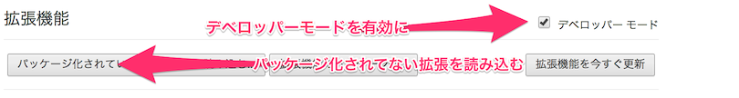
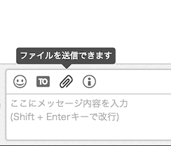
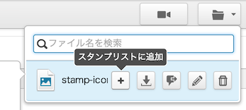
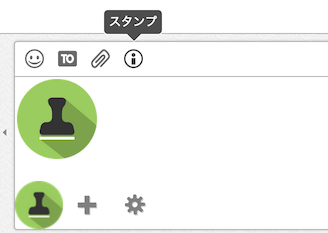

チャットワークでLINEスタンプのように画像を貼る事ができます
Chatwork-stamp拡張を Google Chrome にインストールする事で、チャットワークにアップロードした画像をスタンプのように簡単に貼り付ける事ができます。
インストールの仕方
ダウンロードした拡張を展開したあと、Google Chromeの拡張機能一覧を開き、デベロッパーモードにチェックをいれ、「パッケージ化されてない拡張機能を読み込む」から、展開したファイルのディレクトリを指定すれば完了です。

使い方
画像の登録
拡張をインストールしたら、画像を登録します。この拡張は、チャットワークにアップロードした画像をスタンプ化するため、まず最初にスタンプとして使いたい画像をチャットワークにアップロードする必要があります。

まずはスタンプを保存する専用の部屋を作ってそこに画像をアップロードします。画像のアップロードは、発言用テキストエリアの上にあるクリップアイコンからできます。
スタンプの追加
画像のアップロードが完了したら、画像をスタンプとして登録しましょう。チャットワーク画面右上にある、ファイル一覧のアイコンをクリックし、スタンプにしたい画像にカーソルを合わせたあと、「スタンプに追加する」ボタンをクリックします。

スタンプを使う
スタンプを登録したら、投稿フォームに追加されたインフォメーションアイコンをクリックすると、登録されたスタンプの一覧が表示されます。使いたいアイコンをクリックすれば、スタンプとして表示されます。

アイコンの権利について
この拡張に使われているアイコン画像は http://www.iconarchive.com/show/colorful-long-shadow-icons-by-graphicloads/Stamp-icon.html のものを利用させていただいています。